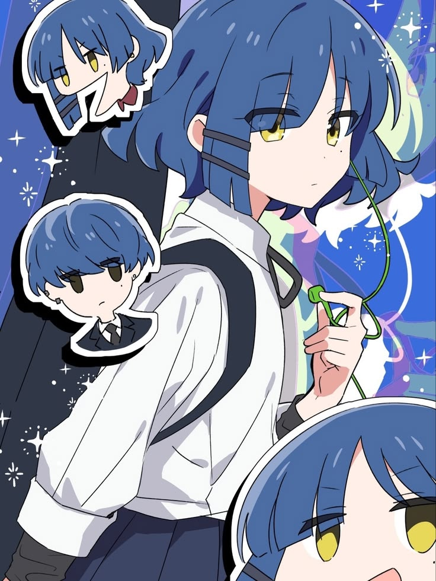
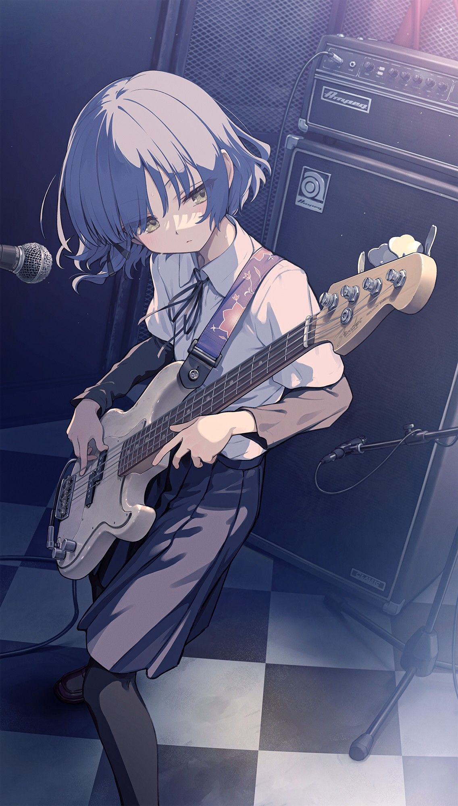

Kessoku Band
Ryo is the bassist of Kessoku Band, playing alongside Hitori Gotoh, Nijika Ijichi, and Seika Ijichi.
BTR Site ↗Kessoku Band / est. 2017—12
A quiet bassist with a strange sense of humor, an even stranger sense of fashion, and a love for music that runs deeper than she usually admits.
See all music ↓
quiet volumeHer music

Ryo is the bassist of Kessoku Band, playing alongside Hitori Gotoh, Nijika Ijichi, and Seika Ijichi.
BTR Site ↗Behind her calm expression is an eccentric girl with a love for music, unusual habits, and a personality that is difficult to forget.
Read about Ryo↗A little about Ryo
Ryo Yamada is the bassist of Kessoku Band. She is calm, eccentric, and deeply passionate about music. Although she often appears distant, her strange habits and straightforward personality make her one of the band's most memorable members.